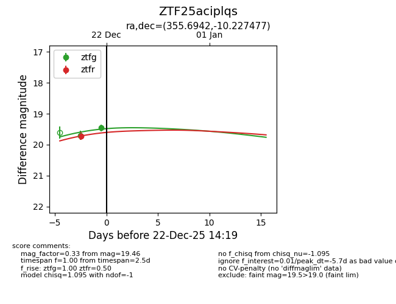
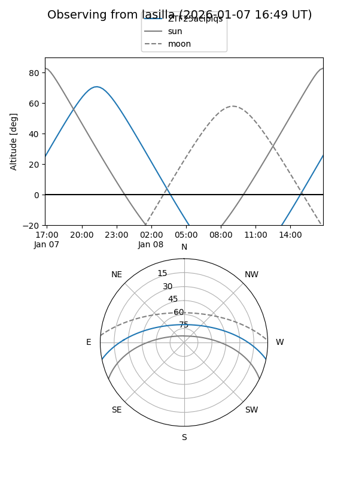
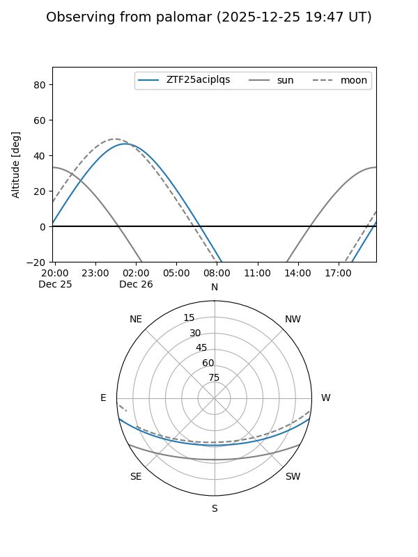
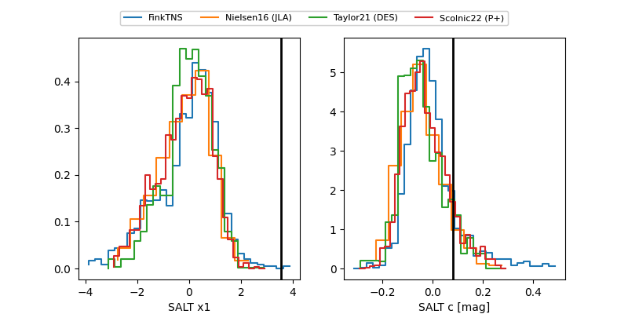

ZTF25aciplqs
Target ZTF25aciplqs at 2025-12-22 14:21
Aliases and brokers:
FINK: fink-portal.org/ZTF25aciplqs
Lasair: lasair-ztf.lsst.ac.uk/objects/ZTF25aciplqs
ALeRCE: alerce.online/object/ZTF25aciplqs
alt names
ZTF25aciplqs (ztf,fink_ztf)
Coordinates:
equatorial (ra, dec) = 355.6942,-10.22748
equatorial (HMS+DMS) = 23:42:46.61,-10:13:38.92
galactic (l, b) = (75.9201,-66.60615)
Flags:
Photometry:
last ztfg=19.46, ztfr=19.72
2 ztfg, 1 ztfr detections
Lightcurve

Visibility


Additional plots
